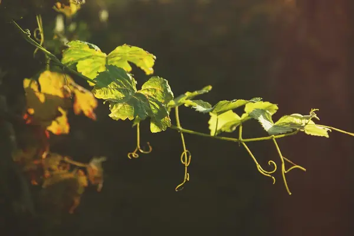

Malbec grape

Photo: Flor Saurina on Unsplash
Malbec is a red grape known for plum, blackberry, violet. Its best-known homes are Mendoza, Cahors.
Origin and history
From Cahors in south-west France; DNA shows its parents are Prunelard and Magdeleine Noire des Charentes, making it a half-sibling of Merlot.
Where it grows
Argentina (Mendoza, especially Luján de Cuyo and the Uco Valley, plus Salta), Cahors, Bordeaux and the Loire as a minor blend partner, Chile and Washington State.
Structure
Full body, deep inky colour, medium acidity and ripe, plush medium to high tannins; Cahors versions are firmer.
Aromas, young and aged
Young: black plum, blackberry, black cherry, violet and cocoa. With age: dried fruit, leather, tobacco and earth.
Ageing
Most best within 2–6 years; top Uco Valley and Cahors can age 10–20.
Also known as
Côt (Loire, Cahors), Auxerrois (Cahors), Pressac (historic Bordeaux).
Good to know
Cahors 'black wine' was prized in medieval England; Argentina now grows most of the world's Malbec, celebrated each 17 April as Malbec World Day.
Wine regions for Malbec
Malbec wines to try
Real bottles from The Wine Library.
Catena Zapata Catena Malbec
High-altitude Malbec: plum, violet, blackberry and soft tannins.
Food: Asado, grilled steak
Yarra Yering Dry Red Wine No. 1
Yarra Valley · Cabernet Sauvignon, Merlot, Malbec, Petit Verdot
Bordeaux-style blend: blackcurrant, cedar, violets and fine tannins.
Food: Roast beef, lamb
Bodega Colomé Malbec Estate
Salta (Cafayate) · Calchaquí Valley · Malbec
High-altitude Malbec: intense black fruit, violet, spice and fresh acidity.
Food: Empanadas, grilled steak, lamb
Zuccardi Concreto Malbec
Uco Valley · Paraje Altamira · Malbec
Concrete-fermented, pure and vibrant: red plum, violet, herbs and chalky tannins.
Food: Grilled beef, mushroom risotto, lamb
Bodega Norton Reserva Malbec
Plush and approachable: plum, blackberry, vanilla and soft spice.
Food: Burgers, barbecue, beef stew
Château du Cèdre Cahors Malbec
South West France · Cahors · Malbec
Dark, structured Cahors Malbec.
Food: Duck, steak
Château du Cèdre Le Prestige
South West France · Cahors · Malbec
Old-vine Cahors: concentrated plum, spice and earth.
Food: Cassoulet, game
Vilafonté Seriously Old Dirt
Paarl · Cabernet Sauvignon, Merlot, Malbec
Ripe, polished Cape blend.
Food: Lamb, steak
Vilafonté Series M
Paarl · Merlot, Malbec, Cabernet Sauvignon
Plush, Merlot-Malbec Cape blend.
Food: Beef, game
Bodega Weinert Tonel Único Malbec
Rare long-aged Malbec from large old casks: savoury and mature.
Food: Asado, game
Errázuriz Villa Cabernet Shiraz Malbec
Aconcagua Valley · Aconcagua · Cabernet Sauvignon, Shiraz, Malbec
Ripe Aconcagua red blend.
Food: BBQ, steak
Pyros Appellation Malbec
San Juan · Pedernal Valley · Malbec
High-altitude Malbec with violet, black plum and a fresh, mineral backbone.
Food: Steak, empanadas, grilled lamb
Bodegas Salentein Reserve Malbec
Plum, violet and cocoa from high-altitude vineyards, with fresh acidity keeping the ripe fruit lively.
Food: Grilled skirt steak with chimichurri
Bodega Noemía A Lisa
Patagonia (Argentina) · Río Negro · Malbec
Cool Patagonian Malbec with fresh blackberry, violets and a lively, juicy line rather than sheer weight.
Food: Empanadas, grilled skirt steak
Similar red grapes
Explore all grapes in the interactive guide
The Wine Reference newsletter
New wines, stories and career guides, one email a week at most.
Over 18s only. Unsubscribe any time with one click. Your email is stored securely by Kit and never shared.
Support The Wine Reference
This guide is free, with no paywall. If it helped you choose a bottle, you can buy me a glass and keep it growing.
🍷 Buy me a glass